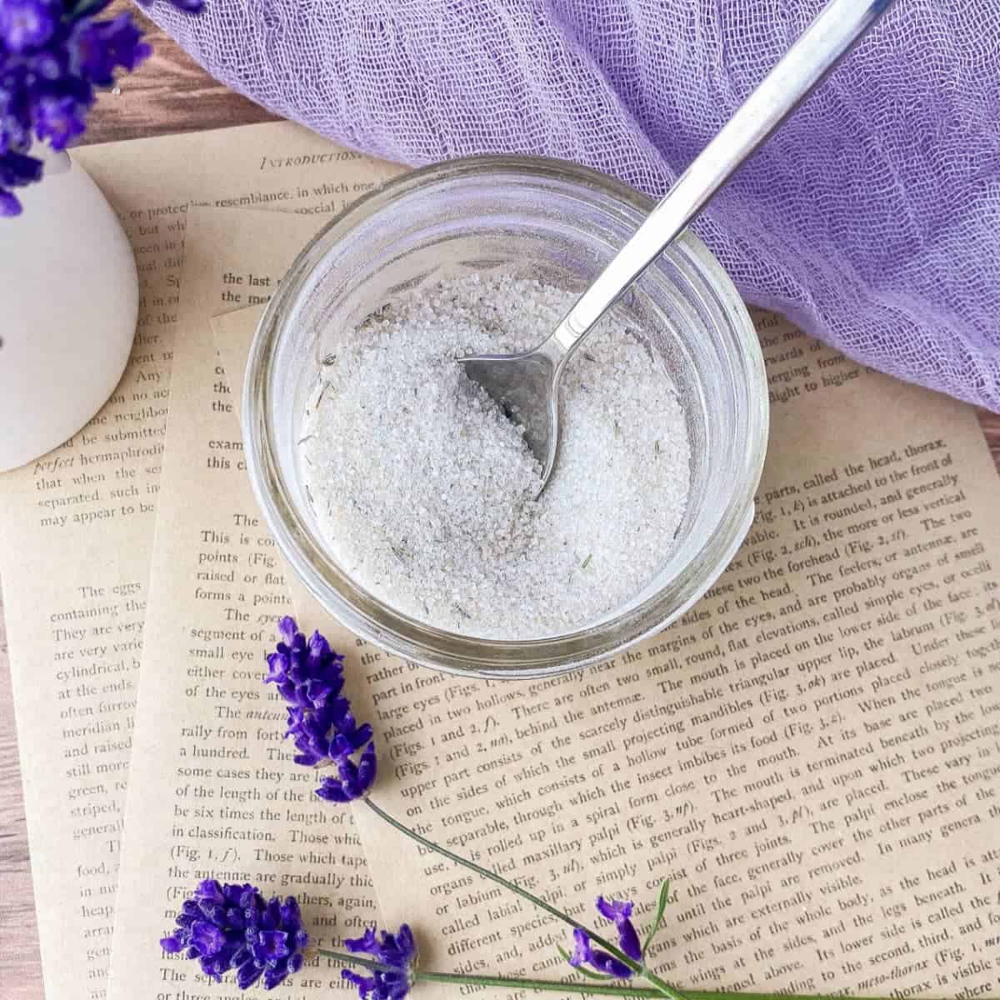

Lavendar Sugar

Description
Making your own lavender sugar is so easy, you might find you always want to keep a jar of it at hand.
It can be added to beverages (try it in lemonade or tea) and baked goods, as well as whipped cream and butter.
Ingredients
- 1 tablespoon culinary dried lavender
- 2 cups sugar, divided
Steps
- Gather the ingredients.
- Place the dried lavender in the bowl of a food processor and blend it for 10 to 15 seconds to chop it into small pieces.
- Add 1 cup of the granulated sugar to the processor and blend well, for 15 to 20 seconds, until the lavender is finely ground and mixed with the sugar.
- Whisk the lavender sugar together with the remaining cup of sugar until the lavender is well dispersed.